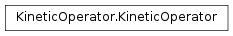
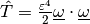

KineticOperator¶
About the KineticOperator class¶
The WaveBlocks Project
@author: R. Bourquin @copyright: Copyright (C) 2010, 2011, 2012, 2013, 2014, 2015, 2016 R. Bourquin @license: Modified BSD License
Inheritance diagram¶
Class documentation¶
-
class
WaveBlocksND.KineticOperator(grid, eps=None)[source]¶ This class represents the kinetic operator
 in Fourier space.
in Fourier space.-
__init__(grid, eps=None)[source]¶ Compute the Fourier transformation of the position space representation of the kinetic operator
.Parameters: - grid – The position space grid
 of which we compute
its Fourier transform
of which we compute
its Fourier transform  .
. - eps – The semi-classical scaling parameter
 . (optional)
. (optional)
- grid – The position space grid
-
calculate_exponential(factor=1.0)[source]¶ Calculate the exponential
 used in the Strang splitting.
used in the Strang splitting.Parameters: factor – The prefactor  . It defaults to 1 but is
usually set to
. It defaults to 1 but is
usually set to  by the caller.
by the caller.
-
calculate_operator(eps=None)[source]¶ Calculate the kinetic operator  in Fourier space.
Parameters: eps – The semi-classical scaling parameter . It has to
be given here or during the initialization of the current instance.
-
evaluate_at(grid=None)[source]¶ Evaluate the kinetic operator in Fourier space. This returns an numpy
ndarrayby using a specific .
.Parameters: grid – Unused dummy parameter.
-